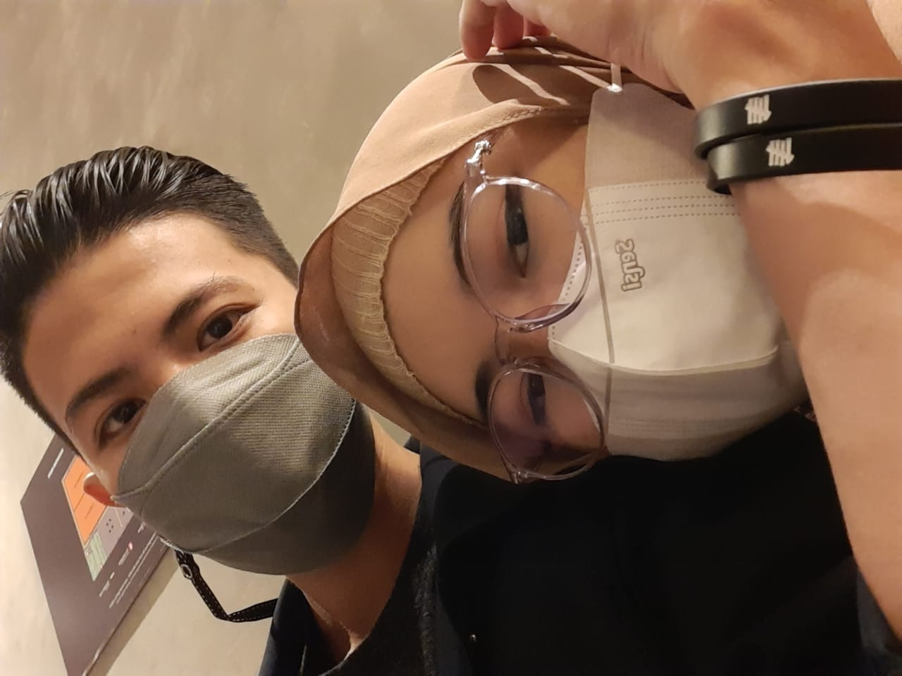
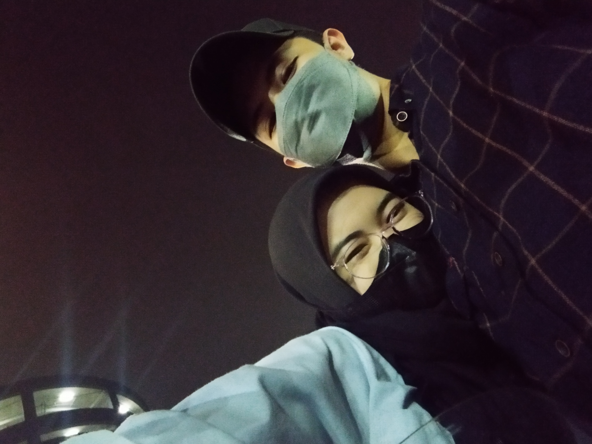
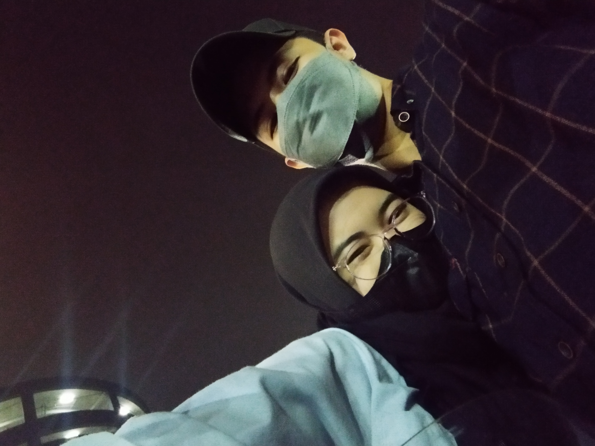
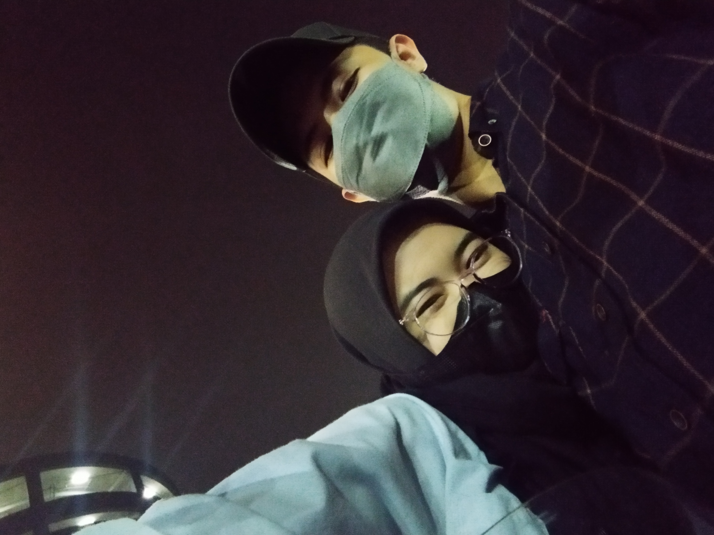

Pencet lovenya ayang!!



 


halo ayanggs
maaf yaa kalo aku
masih suka bikin kamu kesel
aku cuma mau bilang
pencet ini dulu deh 👉❤️
Klik biar geser yang!
maaf ya aku masih aja bikin kamu sedih karena sikap ku yg kadang ga nentu,
aku juga kadang gabisa sepenuhnya ngertiin gimana cara kamu mau diperhatiin,
aku masih banyak kurangnya buat cewe secantik dan sebaik kamu,
tapi aku selalu berusaha jadi yang terbaik buat kamu, maafin aku ya sayanggg hehe...jangan bosen sabar sama aku ya, makasih selalu support aku... love u raa🤍